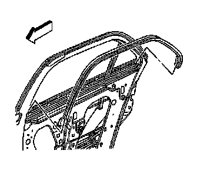
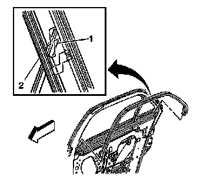

Rear Side Door Window Inner Weatherstrip Replacement
Rear Side Door Window Inner Weatherstrip Replacement
Removal Procedure

1. Remove the door trim panel. Refer to Rear Side Door Trim Panel Replacement (Service and Repair) .
2. Remove the window inner belt sealing strip. Refer to Rear Door Window Belt Inner Sealing Strip Replacement (Rear Door Window Belt Inner Sealing Strip Replacement) .
3. Starting at the front lower end, pull the inner window seal away from the door header pinch-weld flange.
Installation Procedure

1. Position the notch (1) in the weatherstrip to the top of the division post.
2. Install the weatherstrip onto the pinch-weld flange with notch (2) aligned to the vent window clip.
3. Engage the rear portion of the weatherstrip to the door pinch-weld flange working from the division post rearward.
4. Engage the center portion of the weatherstrip to the pinch-weld flange, bending the weatherstrip at the pillar.
5. Engage the remaining portion to the door pinch-weld flange down to the door depression.
6. Inspect the weatherstrip, from outside the door, along the applique channel and tuck the seal lip into the channel if required.
7. Install the window inner belt sealing strip. Refer to Rear Door Window Belt Inner Sealing Strip Replacement (Rear Door Window Belt Inner Sealing Strip Replacement) .
8. Install the door trim panel. Refer to Rear Side Door Trim Panel Replacement (Service and Repair) .